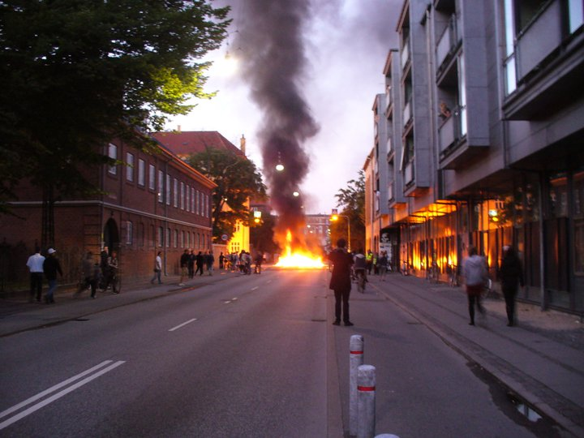

Copenhagen Voyage: A 4-Day Urban Adventure
Introduction
Copenhagen, Denmark's capital, is renowned for its historic architecture, vibrant cultural scene, and picturesque canals. The city beautifully blends old-world charm with modern design, making it a must-visit destination for travelers seeking both tradition and contemporary experiences.
A Brief History of Copenhagen: Founded in the 10th century, Copenhagen evolved from a small fishing village into a major European capital. It has played a pivotal role in Danish history, culture, and commerce. Today, Copenhagen stands as a testament to Denmark's rich heritage, offering a unique blend of past and present.
Day 1: Arrival and Historical Exploration
Upon arriving at Copenhagen Airport, I took a taxi to my hotel located in the heart of the city. The first day was dedicated to exploring Copenhagen's rich historical landmarks.
Wandering through the bustling streets, I marveled at the stunning architecture of Freetown Christiania. This unique district is known for its artistic expressions and autonomous community. Later, I visited Nyhavn Harbor, where colorful buildings line the picturesque canals, creating a perfect backdrop for a relaxing stroll. The evening was spent enjoying a delightful dinner at a traditional Danish restaurant, savoring dishes like Smørrebrød and Frikadeller.
Day 2: Art, Culture, and Modern Copenhagen
The second day was all about immersing myself in Copenhagen's artistic and modern attractions.

I began the day with a visit to the National Museum of Denmark, where I delved into the country's rich cultural history through fascinating exhibits. The afternoon was spent exploring the vibrant Strøget Shopping Street, one of Europe's longest pedestrian streets, known for its high-end boutiques and diverse shops. Later, I headed to Rosenborg Castle, an exquisite Renaissance castle housing the Danish crown jewels. The day concluded with a visit to the Copenhagen Opera House, marveling at its modern architecture and stunning waterfront location.
Day 3: Natural Beauty and Scenic Views
On the third day, I ventured into Copenhagen's natural landscapes and enjoyed some of the city's scenic views.

I started the day with a visit to Tivoli Gardens, one of the world's oldest amusement parks. The park's enchanting gardens, historic buildings, and thrilling rides provided a perfect blend of fun and relaxation. In the afternoon, I took a leisurely boat tour along Copenhagen's canals, offering unique perspectives of the city's architectural beauty and vibrant neighborhoods. The evening was perfect for a relaxing walk through the Botanical Garden, enjoying the serene environment and lush greenery.
Day 4: Culinary Delights and Farewell
On my final day, I indulged in Copenhagen's culinary scene and enjoyed some last-minute exploration before bidding farewell to the city.

I began the morning with a visit to the vibrant Copenhagen West district, known for its modern architecture and trendy eateries. Sampling local delicacies like Smørrebrød and Danish pastries was a delightful experience. The afternoon was dedicated to exploring the charming canals of Nyhavn, where I picked up souvenirs and enjoyed the lively atmosphere. I also revisited my favorite spots around the city, capturing final photographs and soaking in the serene ambiance. The trip concluded with a farewell dinner at a rooftop restaurant, offering stunning views of Copenhagen's skyline as I reflected on an enriching journey.
Highlights
- Freetown Christiania: Unique autonomous district known for its artistic expressions.
- Nyhavn Harbor: Picturesque canals lined with colorful buildings and lively restaurants.
- The Little Mermaid Statue: Iconic bronze statue inspired by Hans Christian Andersen's fairy tale.
- Christiansborg Palace: Historic palace housing the Danish Parliament and Royal Reception Rooms.
- Tivoli Gardens: Enchanting amusement park blending fun with beautiful gardens.
- Rosenborg Castle: Exquisite Renaissance castle home to the Danish crown jewels.
- Strøget Shopping Street: One of Europe's longest pedestrian shopping streets.
- National Museum of Denmark: Comprehensive exhibits on Danish cultural history.
- Kunsthal Charlottenborg: Renowned contemporary art gallery.
- Botanical Garden: Serene gardens offering a peaceful escape in the city.
Practical Information
Transportation
Copenhagen is easily accessible by air via Copenhagen Airport, with regular flights from major global cities. Within the city, public transportation includes an efficient network of buses, trains, and the metro operated by DOT. The Copenhagen Card provides unlimited travel on public transport and free or discounted admission to many attractions. Renting a bike is also a popular and convenient option, as Copenhagen is renowned for its bike-friendly infrastructure.
Accommodation
Copenhagen offers a wide range of accommodations, from luxury hotels in the city center to budget-friendly hostels and charming guesthouses. I stayed at a mid-range hotel in the Old Town, which provided excellent amenities and easy access to key attractions.
Budgeting
Copenhagen is known for being moderately expensive. A comfortable daily budget ranges from DKK 600 to DKK 1,800, covering accommodation, meals, transportation, and activities.
Tips and Recommendations
Do’s and Don’ts
- Do: Purchase a Copenhagen Card for unlimited travel and museum discounts.
- Don’t: Litter or disturb public spaces; help preserve Copenhagen's cleanliness and beauty.
- Do: Wear comfortable footwear for extensive walking and exploring.
- Don’t: Engage in unsafe activities without proper guidance and equipment.
- Do: Carry a refillable water bottle; public drinking fountains are available throughout the city.
- Don’t: Skip validating your public transport tickets; fines are issued for non-validated tickets.
- Do: Respect local customs and traditions; observe proper etiquette when interacting with locals.
- Don’t: Jump queues; always wait your turn at popular attractions.
- Do: Use sunscreen and wear a hat, especially during summer months.
- Don’t: Forget to learn a few basic Danish phrases to enhance your interactions.
Packing List
- Comfortable walking shoes
- Weather-appropriate clothing (can be rainy)
- Camera or smartphone for photos
- Guidebook or map of Copenhagen
- Travel adapter (Type C or Type E socket)
- Reusable water bottle
- Personal medications
- Light jacket for cooler evenings
- Umbrella or raincoat
- Basic Danish phrases
Local Etiquette
Respect the local community and their cultural practices. Always greet with a friendly smile and a polite gesture. Dress appropriately when visiting religious and historical sites. When interacting with locals, use polite language and be mindful of cultural norms.
Cultural Immersion
Engaging with local Copenhagen residents provided a deeper understanding of the city's cultural heritage and daily life. I participated in a traditional Danish cooking class, learning to prepare authentic dishes like Smørrebrød and Frikadeller, and experienced the rich flavors of Copenhagen's cuisine firsthand.
Visiting local markets and attending cultural events offered insights into Copenhagen's artistic and cultural evolution, fostering a greater appreciation for the city's dynamic spirit and enduring traditions.
Food and Cuisine
Copenhagen's culinary scene is a delightful blend of traditional Danish flavors, modern gastronomy, and international influences.
- Smørrebrød: Open-faced sandwiches with a variety of toppings like pickled herring, roast beef, and liver pâté.
- Frikadeller: Danish meatballs made from minced pork and beef, typically served with potatoes and gravy.
- Rugbrød: Dense, dark rye bread that is a staple in Danish cuisine.
- Stegt Flæsk: Crispy fried pork belly served with potatoes and parsley sauce.
- Rødgrød med Fløde: A traditional Danish dessert made from red berries and served with cream.
- Local Beers: Copenhagen boasts a thriving craft beer scene with numerous local breweries.
- Danish Pastries: Sweet, flaky pastries available in a variety of flavors.
- New Nordic Cuisine: Innovative culinary movement focusing on fresh, local ingredients.
- Hot Dogs (Pølser): Popular street food with various toppings.
- Espresso and Specialty Coffees: Enjoyed at numerous cozy cafes throughout the city.
I highly recommend dining at a traditional Danish restaurant in the Old Town, where you can savor authentic dishes while enjoying the charming ambiance of local eateries.
Adventure and Activities
Copenhagen offers a variety of activities for adventure enthusiasts and those seeking unique experiences:
- Guided City Tours: Explore Copenhagen's historical and cultural landmarks with expert guides.
- Boat Tours on Canals: Enjoy scenic boat rides along Copenhagen's picturesque canals.
- Hiking on Amager Strandpark: Trek along beautiful beaches and scenic trails.
- Kastellet: Visit one of the best-preserved star fortresses in Northern Europe.
- Shopping: Discover luxury brands and unique boutiques along Strøget.
- Nightlife: Experience Copenhagen's vibrant nightlife with numerous bars, clubs, and live music venues.
- Photography Tours: Capture Copenhagen's architectural beauty and lively streets with guided sessions.
- Local Markets: Explore bustling markets like Torvehallerne for fresh produce and traditional crafts.
- Cooking Classes: Learn to prepare traditional Danish dishes with local chefs in hands-on cooking workshops.
- Relaxation: Enjoy spa days or leisurely walks in beautiful parks for ultimate relaxation.
One of the most thrilling activities was taking a guided bike tour through Copenhagen's green spaces and along the picturesque canals, offering a perfect blend of urban exploration and natural beauty.
Personal Stories
Meeting Freja, a local artist, was a highlight of my trip. She took me to her studio in the heart of Christiania, where I witnessed her creative process and learned about Copenhagen's thriving art community. Her passion for art and dedication to her craft provided a deeper appreciation for the city's artistic landscape.
Another unforgettable moment was attending a traditional Danish folk dance performance at Tivoli Gardens, where I experienced the lively rhythms and cultural expressions that define Copenhagen's vibrant community.
Conclusion
Copenhagen is a captivating destination that offers a perfect blend of historic charm, modern design, and vibrant culture. My 4-day journey was an enriching and exhilarating experience, uncovering the dynamic spirit and enduring traditions of one of Europe's most livable cities.
If you're planning a trip to Denmark, Copenhagen should definitely be on your list. Whether you're seeking serene canal-side relaxation, cultural immersion, or thrilling adventures, Copenhagen has something for everyone.
Until next time, happy travels!
Visitor Testimonials
"Copenhagen is a perfect blend of nature and urban life. The canals are breathtaking, and the Old Town is full of charm and history. Every day brought a new adventure!"
"Exploring Copenhagen's museums and enjoying the local cuisine was an unforgettable experience. The city's vibrant cultural scene and friendly locals made my trip truly special."
Follow My Adventures
Stay connected and follow my journey through the links below: